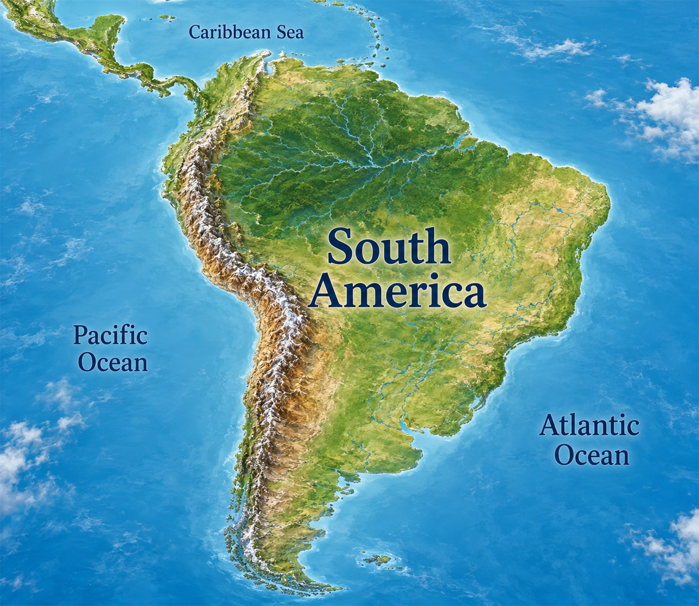
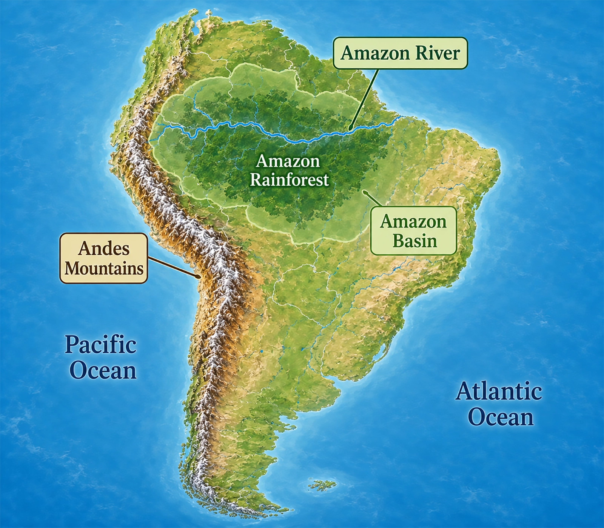
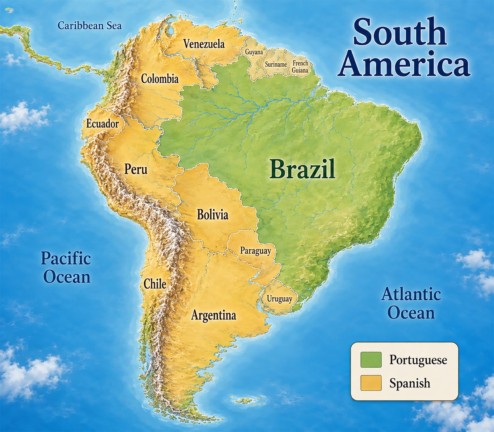
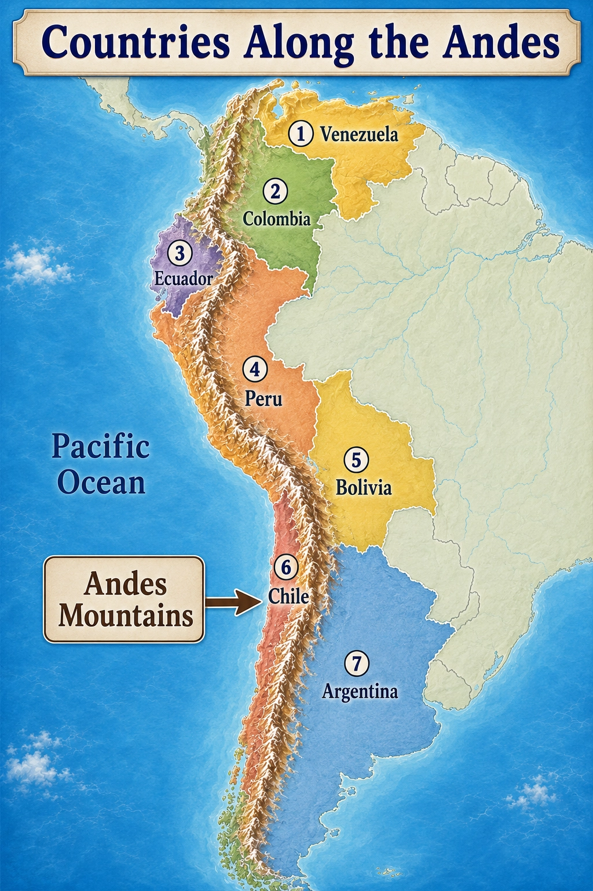

South America stretches from the Caribbean coast in the north
toward the cold waters near Antarctica in the south.
Its geography includes some of the world's most impressive natural
features: a towering mountain chain, an enormous river system,
tropical rainforest, grasslands, deserts, and thousands of miles
of coastline.
⛰️ Andes🌊 Amazon🌳 Rainforest🇧🇷 Brazil

South America stretches from the Caribbean Sea toward the waters near Antarctica.
Along the Western Edge
The Andes Mountains
The Andes Mountains form a massive mountain chain
along the western side of South America.
The Andes stretch for thousands of miles from the northern part
of the continent toward its southern end. They are one of the
longest mountain systems on Earth.
In many places, the mountains rise sharply near the Pacific coast,
creating dramatic landscapes and high plateaus.
⛰️
Remember the Location
Andes = western South America

The Andes run along the western side of the continent while the Amazon system dominates much of the north.
A Giant River System
The Amazon River
Across northern South America flows the enormous
Amazon River.
The Amazon is fed by thousands of smaller rivers and streams
called tributaries. Together, they form one of
the largest river systems on Earth.
The Amazon River flows generally eastward across the continent
before emptying into the Atlantic Ocean.
More Than Just a River
The Amazon Basin
The
Amazon Basin
is the enormous area of land drained by the Amazon River and all
of its tributaries.
When rain falls anywhere within this vast basin, much of that water
eventually flows into the Amazon river system.
🌧️Rain Falls
→
💧Streams & Rivers
→
🌊Amazon River
Much of the Amazon Basin is covered by the
Amazon Rainforest, the largest tropical rainforest
on Earth.
The Largest Country
Brazil
Brazil is the
largest country in South America.
It occupies a huge portion of the eastern and central parts of
the continent and contains much of the Amazon Basin.
Brazil also has a long coastline along the
Atlantic Ocean.

Brazil is the largest country in South America and stands out from most of its neighbors in another important way: language.
Languages of South America
Portuguese and Spanish
Two European languages are especially important across South America,
but they are not distributed evenly.
Brazil
Portuguese
Portuguese is the main language spoken in
Brazil.
Most Other Countries
Spanish
Spanish is the main language spoken in most
other South American countries.
💬
South America is home to many Indigenous languages and other
languages as well. Portuguese and Spanish are simply the most
widely spoken national languages across much of the continent.
Following the Mountains
Countries Along the Andes
The Andes are so long that they pass through or along
seven South American countries.
Follow the mountain chain from north to south to see how these
countries are connected by the same enormous mountain system.

The Andes form a long mountain spine along western South America.
North to South
⛰️Venezuela
⛰️Colombia
⛰️Ecuador
⛰️Peru
⛰️Bolivia
⛰️Chile
⛰️Argentina
From Venezuela in the north to Chile and Argentina in the south,
the Andes connect much of the western edge of South America.
Physical geography connects much of South America.
The Andes stretch along the west, while the Amazon River and Basin
dominate much of the north. Brazil occupies a large part of the
continent, and languages and national borders add another layer to
its geography.